Working with Query Forms in the Catalog¶
Alation Cloud Service Applies to Alation Cloud Service instances of Alation
Customer Managed Applies to customer-managed instances of Alation
Applies from release 2021.2
Compose queries can be viewed and run as query forms in the catalog. See Query Forms for an overview, including details on how to access query forms. Continue reading in this topic for help on opening and using query forms.
Open Query as Form¶
To open a query as a query form,
Open the Catalog page of the query.
On the top right of the query page, click Run Form:
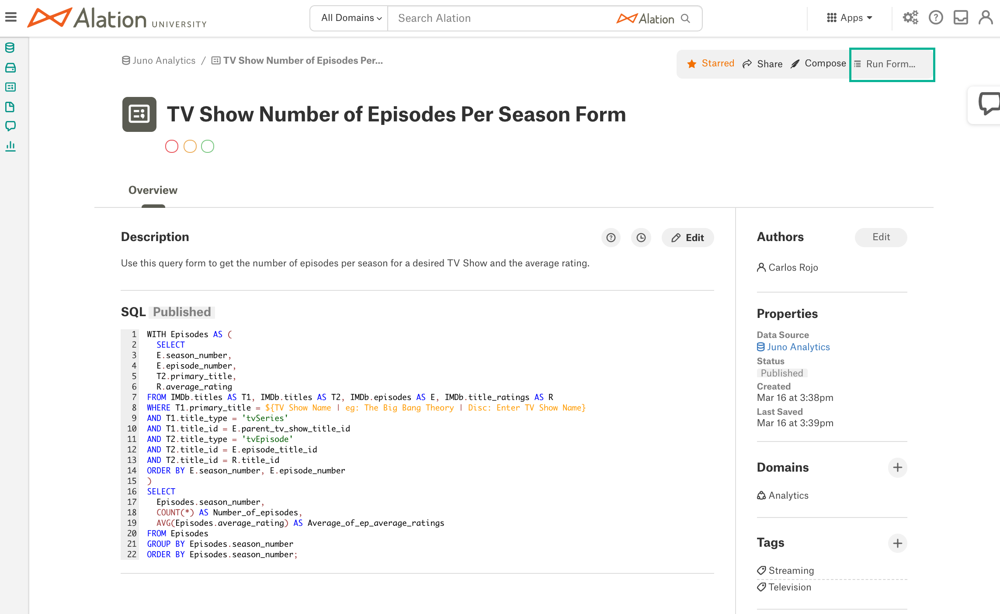The page of the query form that corresponds to the given query will open. The query form page displays the Catalog field values from the query page, such as the Title, Description, Authors, other built-in and custom fields, and the Data Quality Flags:
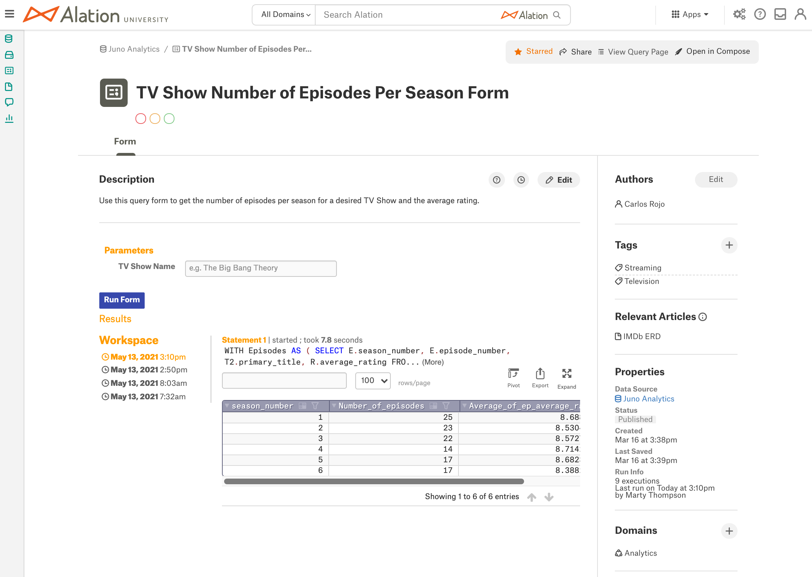
Understanding the Query Form Page¶
The Catalog fields you see on the query form page are in fact the fields of the corresponding query object. When you change a field value on the query form page, you modify this value for the query, and the changes will apply to the Catalog page of the query. A query form is not an independent Catalog object.
The default fields on the query form page are:
Field Name |
Description |
|---|---|
Title |
The Title of the query. |
Description |
The Description of the query. |
Authors |
The Authors of the query. |
Tags |
List of Tags added to the query. |
Relevant Articles |
List of Articles where the query is referenced using @-mentions. |
Properties |
|
Domains |
The Domain information for the query. |
Note that you may see more fields on the query form page as your Catalog Admins may have added other custom fields to the query page template.
The ability to modify a field on the query form page depends on the role of the user and their access level to the query. The query Owner and Authors can edit the Title and all fields on the page. Server Admins can edit the Authors field even when they are not Authors. The query Owner, Authors, and Stewards and above can update the Description, add or remove tags, and set Data Quality Flags. All users who can open the query form page can view the fields, such as Properties, Relevant Articles, and assigned Domains.
Actions on the Query Form Page¶
The actions on the query form page are actions over the corresponding query:
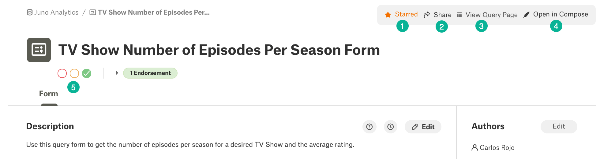
1 - Star - You can favorite the query by clicking the Star option. Starring an object accelerates finding it in the Catalog: when using Alation Search, you can filter the search results to only show Starred objects, which will give you a list of your favourites in the Catalog.
2 - Share - You can share the form with other Catalog users. If you have the Author access level to the query, you can share the query with either Viewer or Author access level.
3 - View Query Page - You can return to the Catalog page of the query.
4 - Open in Compose - If your role has permissions to use Compose, you will be able to open the query in Compose.
5 - Endorse, Warn, Deprecate - If your role has permissions to set Data Quality Flags, you can add and Endorsement, Warning, or Deprecation on the query.
Run Form¶
You can run a query form and retrieve the results into the Catalog when:
You have access to the required objects in the data source
You have your own database credentials
To run a query form starting with 2022.1:
On the query form page, if you see a Filter Results section, enter any filters you would like to apply to the form. If there’s an information icon, hover over it for information about the filters. You can use the Clear Form button to remove any data you have entered and revert back to the form’s default values.
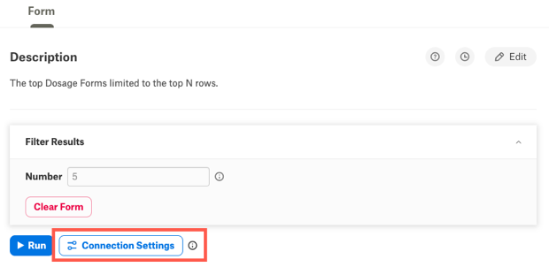By default, the form will run with the last connection settings you used in Compose. Hover over the information icon next to the Connection Settings button to see the current settings. To use different connection settings:
Click the Connection Settings button. The Connection Settings dialog opens.
Click the menu button next to Choose a Connection and choose the connection you want to use. When you hover over the connection name, you’ll see the connection URI in a popup so you can be sure you’re selecting the right connection.
Note
If you want to add or edit connection information, see Working with Data Source Connections.
Click the menu button next to Connect as (Select User) and select the user you want to connect with. If you’re using SSO to connect, click the pencil icon next to the user. This will open the login screen for your identity provider in a new tab.
Click the Set Active Connection button. Alation will attempt to connect using the selected connection and user.
Click the Run button to run the form. The query form will start running, and you will see the Running indicator:
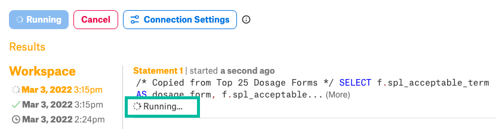The results will be displayed in the Results area.
To run a query form before 2022.1:
On the query form page, under Parameters (or Filter Results for some versions), specify filters if they are present and then click Run Form:
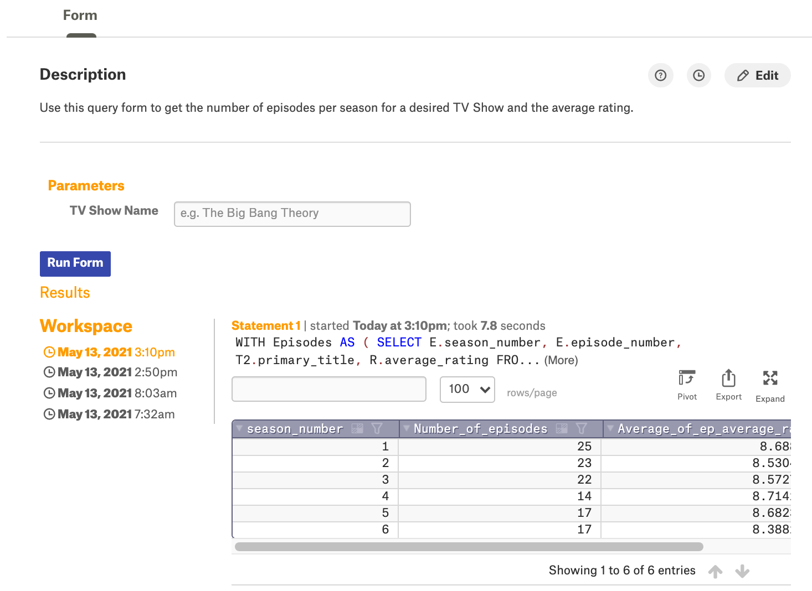The Connect to Data Source dialog will pop up:
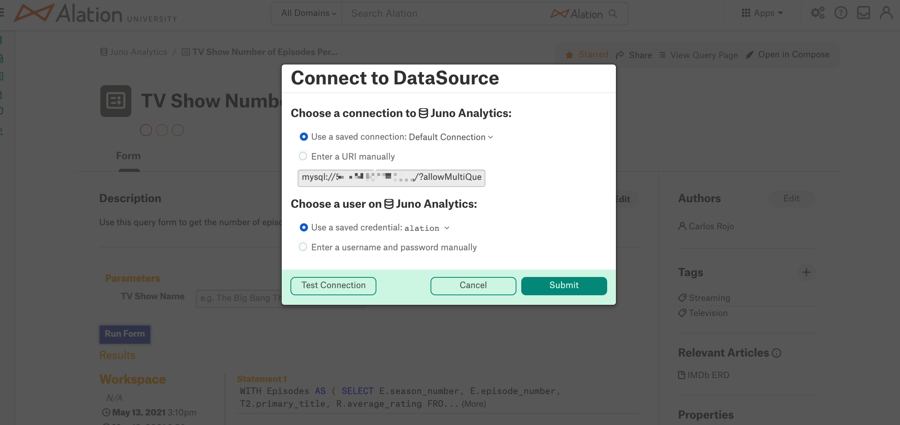Select a Connection from saved connections or enter the URI manually.
Note
Saved connections are configured and saved in Compose when analysts create queries and are inherited by the Catalog. New connections cannot be created in the Connect to Data Source dialog.
Select or enter your username and password manually.
Note
If this data source is configured to use SSO, instead of providing credentials in the dialog you will need to authenticate with your Identity Provider that is external to Alation. In this case the ability to select saved credentials or to provide credentials manually will be disabled. Follow the prompts in the dialog to authenticate.
Click Test Connection to ensure that the connection can be established with the credentials you have provided. In case of SSO authentication, this button will be named Test Authorization. Test Authorization will check if your authentication token is valid. If it has expired, you will be taken to the login page of your Identity Provider to authenticate.
After testing the connection or authorization, click Submit. The query form will start running, and you will see the Running indicator in the UI:
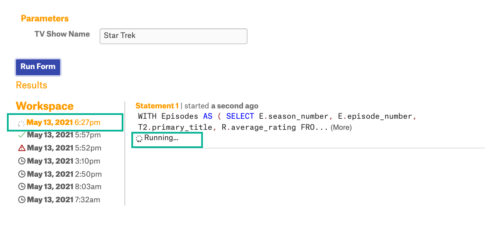The results will be displayed in the Results area.
Clear Form¶
Applies from version 2021.3
You can clear the input from the Query Form by clicking the Clear Form button under the filter fields:
{kind=link}
This action clears the current input in the filter fields on the form.
View the Results¶
All results retrieved by a user are displayed as a list under Workspace. The Workspace area stores the execution history of the query form. Every time you hit the Run Form button, Alation retrieves a new result set.
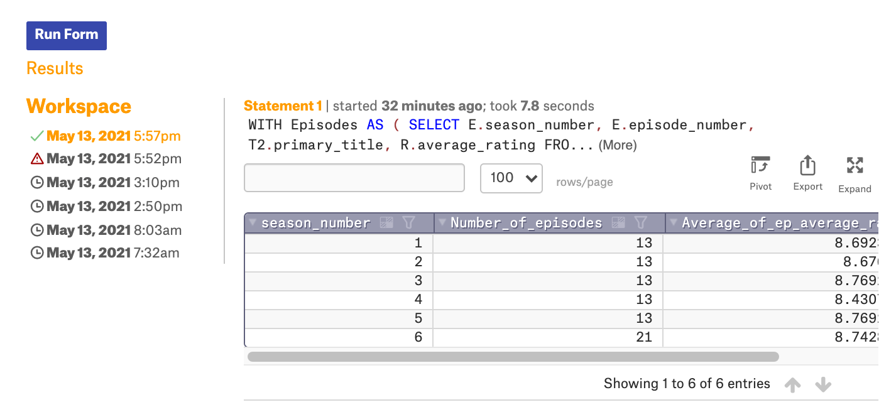You can view previous results by clicking on the corresponding execution timestamp in the list of results. If a query form run fails, there will be a red warning indicator next to the failed result. The currently displayed result set will be highlighted:
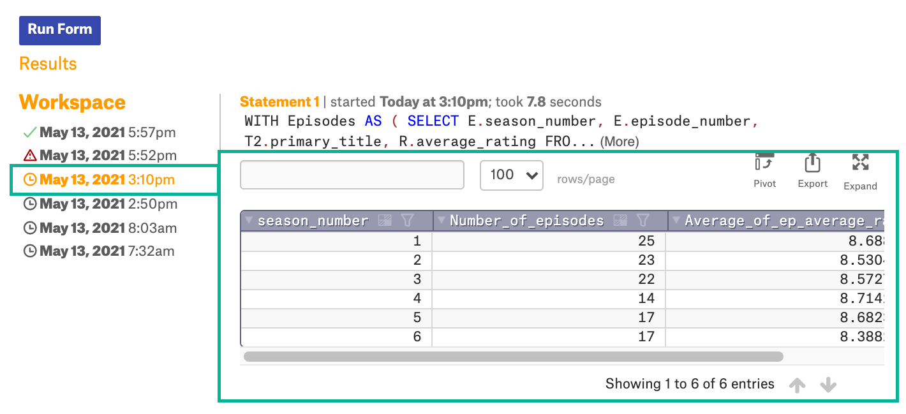If you click the Run Form button again after executing the form, it will reuse the entered credentials or token and will not require re-authentication.
Pivot, Export, Expand¶
The results can be sent to a Pivot table, downloaded as a CSV file or expanded to view in full screen mode. Find the corresponding controls on the top right of the result set:
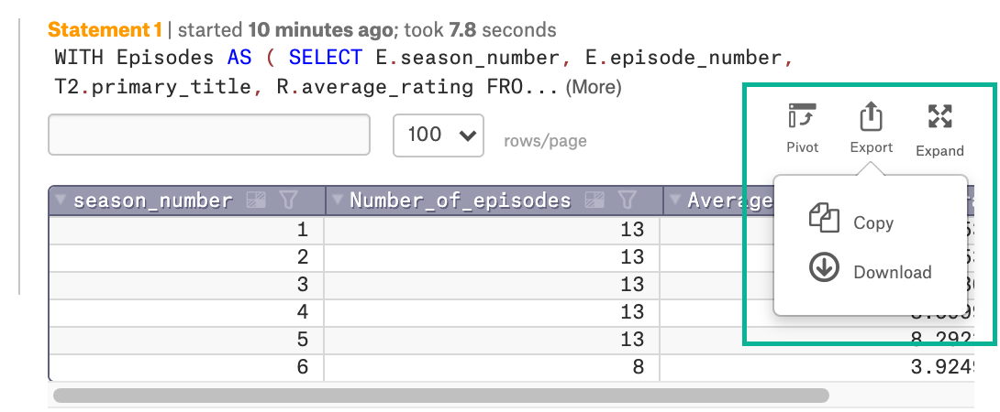{kind=link}